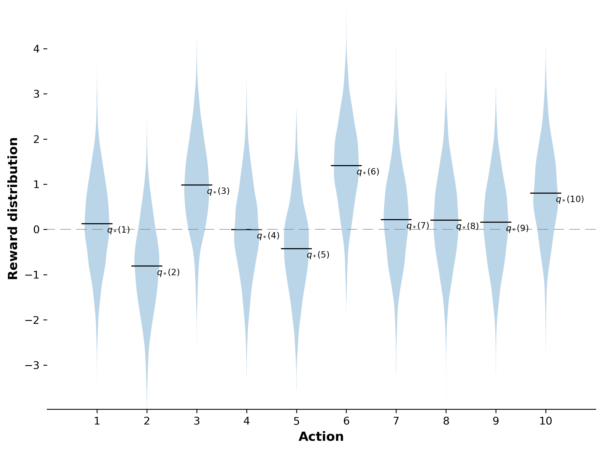

A very important feature distinguishing reinforcement learning from other types of learning is that it uses training information to evaluate the actions taken, rather than instruct by giving correct actions.
A \(k\)-armed Bandit Problem
We consider the following setup:
You repeatedly face a choice among \(k\) different options or actions.
After a choice, you receive a numerical reward chosen from a stationary probability distribution that depends on the action you selected
Your goal is to maximize the total expected reward over a specific time period, such as 1000 action selections or time steps. The problem is named by analogy to a slot machine, or one-armed bandit, except that it has \(k\) levers instead of one.
We denote the action selected on time step \(t\) as \(A_t\) and the corresponding reward as \(R_t\). Each of the \(k\) actions has an expected or mean reward given that that action is selected; let us call this the value of that action.
The value then of an arbitrary action \(a\), denoted \(q_{*} (a)\), is the expected reward given that \(a\) is selected:
If you knew the value of each action, then we solve the \(k\)-armed bandit problem—you would always select the action with highest value.
We assume that you may not have precise knowledge of the action values, although you may have some estimates. We denote this estimated value of action \(a\) at time step \(t\) as \(Q_t(a)\). Thus, we would like that \[
Q_t(a) \approx q_{*}(a).
\]
If you maintain estimates of the action values, then at any time step there is at least one action whose estimated value is greatest. We call these the greedy actions. When you select one of these actions, we say that you are exploiting your current knowledge of the values of the actions. If instead you select one of the non-greedy actions, then we say you are exploring, because this enables you to improve your estimate of the non-greedy action’s value.
Exploitation is the right thing to do to maximize the expected reward on the one step, but exploration may produce the greater total reward in the long run.
Reward is lower in the short run, during exploration, but higher in the long run because after you have discovered the better actions, you can exploit them many times. Because it is not possible both to explore and to exploit with any single action selection, one often refers to the “conflict” between exploration and exploitation.
In any specific case, whether it is better to explore or exploit depends in a complex way on the precise values of the estimates, uncertainties, and the number of remaining steps. There are many sophisticated methods for balancing exploration and exploitation for particular mathematical formulations of the \(k\)-armed bandit and related problems.
However, most of these methods make strong assumptions about stationary and prior knowledge that are either violated or impossible to verify in most applications.
The guarantees of optimality or bounded loss for these methods offer little comfort when the assumptions of their theory do not apply.
Action-value Methods
One natural way to estimate the value of a given action is by averaging the rewards actually received. In mathematical symbols reads
Next we understand as greedy action as the action that results from \[
A_t := \underset{a}{\mathrm{argmax}} \ Q_t(a).
\tag{2.2}\]
Greedy action selection always exploits current knowledge to maximize immediate reward. It also only spends time sampling apparently superior actions. A simple alternative is to behave greedily but occasionally, with a small \(\epsilon\)-probability, select randomly from all the actions with equal probability, regardless of the action-value estimates. We call methods using this near-greedy action selection rule \(\epsilon\)-greedy methods.
The 10-armed Testbed
To evaluate the relative effectiveness of the greedy and \(\epsilon\)-greedy action-value methods, we compared them numerically on a suite of test problems.
Set up
The experiment runs as follows.
Consider a \(k\)-bandit problem with \(k=10\)
For each bandit problem, the action values
\[
q_{*}(a) \sim \mathcal{N}(0,1)
\]
Then when choosing an action \(A_t\) the corresponding reward \(R_t\) is sampling from a Gaussian distribution \[
R_t \sim \mathcal{N}(q_{*}(A_t), 1)
\]
Code
import numpy as npfrom matplotlib import pyplot as plt# Randomly sample mean reward for each actionmeans = np.random.normal(size=(10, ))# Generate sample data based on normal distributiondata = [np.random.normal(mean, 1.0, 2000) for mean in means]# Create violin plotplt.figure(figsize=(8, 6), dpi=150)plt.violinplot( dataset=data, showextrema=False, showmeans=False, points=2000)# Draw mean marksfor i, mean inenumerate(means): idx = i +1 plt.plot([idx -0.3, idx +0.3], [mean, mean], c='black', linewidth=1) plt.text(idx +0.2, mean -0.2, s=f"$q_*({idx})$", fontsize=8)# Draw 0-value dashed lineplt.plot(np.arange(0, 12), np.zeros(12), c='gray', linewidth=0.5, linestyle=(5, (20, 10)))plt.tick_params(axis='both', labelsize=10)plt.xticks(np.arange(1, 11))# get rid of the framefor i, spine inenumerate(plt.gca().spines.values()):if i ==2: continue spine.set_visible(False)# Draw labelslabel_font = {'fontsize': 12,'fontweight': 'bold'}plt.xlabel('Action', fontdict=label_font)plt.ylabel('Reward distribution', fontdict=label_font)plt.margins(0)plt.tight_layout()plt.show()

Source Code
---title: "Multi-armed Bandits"author: "Saúl Díaz Infante Velasco"format: html: grid: margin-width: 350px pdf: defaultreference-location: margincitation-location: margin---# Multi-armed BanditsA very important feature distinguishing reinforcement learning from other typesof learning is that it uses training information to evaluate the actions taken,rather than instruct by giving correct actions.# A $k$-armed Bandit ProblemWe consider the following setup:- You repeatedly face a choice among $k$ different options or actions.- After a choice, you receive a numerical reward chosen from a stationary probability distribution that depends on the action you selected- Your goal is to maximize the total expected reward over a specific time period, such as 1000 action selections or time steps. The problem is named by analogy to a slot machine, or `one-armed bandit`, except that it has $k$ levers instead of one.We denote the action selected on time step $t$ as $A_t$ and the correspondingreward as $R_t$. Each of the $k$ actions has an expected or mean reward giventhat that action is selected; let us call this the value of that action.The value then of an arbitrary action $a$, denoted $q_{*} (a)$, is the expectedreward given that $a$ is selected:$$ q_{*}(a): = \mathbb{E} \left[ R_t | A_t =a\right].$$If you knew the value of each action, then we solve the $k$-armed banditproblem---you would always `select the action with highest value`.We assume that you may not have precise knowledge of the action values, althoughyou may have some estimates. We denote this estimated value of action $a$ attime step $t$ as $Q_t(a)$. Thus, we would like that $$ Q_t(a) \approx q_{*}(a).$$If you maintain estimates of the action values, then at any time step there isat least one action whose estimated value is greatest. We call these the*greedy* actions. When you select one of these actions, we say that you are*exploiting* your current knowledge of the values of the actions. If instead youselect one of the non-greedy actions, then we say you are exploring, becausethis enables you to improve your estimate of the non-greedy action’s value.Exploitation is the right thing to do to maximize the expected reward on the onestep, but exploration may produce the greater total reward in the long run.Reward is lower in the short run, during exploration, but higher in the long runbecause after you have discovered the better actions, you can exploit them manytimes. Because it is not possible both to explore and to exploit with any singleaction selection, one often refers to the “conflict” between exploration andexploitation.In any specific case, whether it is better to explore or exploit depends in acomplex way on the precise values of the estimates, uncertainties, and thenumber of remaining steps. There are many sophisticated methods for balancingexploration and exploitation for particular mathematical formulations of the$k$-armed bandit and related problems.However, most of these methods make strong assumptions about stationary andprior knowledge that are either violated or impossible to verify in mostapplications.The guarantees of optimality or bounded loss for these methods offer littlecomfort when the assumptions of their theory do not apply.## Action-value MethodsOne natural way to estimate the value of a given action is by averaging therewards actually received. In mathematical symbols reads$$ Q_t(a):= \dfrac{ \sum_{i=1}^{t-1} R_i \cdot \mathbb{1}_{A_{i} = a} }{\sum_{i=1}^{t-1} \mathbb{1}_{A_i=a}} .$$ {#eq-action_avering_kbandit}Next we understand as greedy action as the action that results from $$ A_t := \underset{a}{\mathrm{argmax}} \ Q_t(a).$$ {#eq-greedy_action}Greedy action selection always exploits current knowledge to maximize immediatereward. It also only spends time sampling apparently superior actions. A simplealternative is to behave greedily but occasionally, with a small$\epsilon$-probability, select randomly from all the actions with equalprobability, regardless of the action-value estimates. We call methods usingthis near-greedy action selection rule $\epsilon$-greedy methods.## The 10-armed TestbedTo evaluate the relative effectiveness of the greedy and $\epsilon$-greedyaction-value methods, we compared them numerically on a suite of test problems.### Set up::: callout-tip## The experiment runs as follows.- Consider a $k$-bandit problem with $k=10$- For each bandit problem, the action values$$ q_{*}(a) \sim \mathcal{N}(0,1)$$- Then when choosing an action $A_t$ the corresponding reward $R_t$ is sampling from a Gaussian distribution $$ R_t \sim \mathcal{N}(q_{*}(A_t), 1) $$:::```{python}import numpy as npfrom matplotlib import pyplot as plt# Randomly sample mean reward for each actionmeans = np.random.normal(size=(10, ))# Generate sample data based on normal distributiondata = [np.random.normal(mean, 1.0, 2000) for mean in means]# Create violin plotplt.figure(figsize=(8, 6), dpi=150)plt.violinplot( dataset=data, showextrema=False, showmeans=False, points=2000)# Draw mean marksfor i, mean inenumerate(means): idx = i +1 plt.plot([idx -0.3, idx +0.3], [mean, mean], c='black', linewidth=1) plt.text(idx +0.2, mean -0.2, s=f"$q_*({idx})$", fontsize=8)# Draw 0-value dashed lineplt.plot(np.arange(0, 12), np.zeros(12), c='gray', linewidth=0.5, linestyle=(5, (20, 10)))plt.tick_params(axis='both', labelsize=10)plt.xticks(np.arange(1, 11))# get rid of the framefor i, spine inenumerate(plt.gca().spines.values()):if i ==2: continue spine.set_visible(False)# Draw labelslabel_font = {'fontsize': 12,'fontweight': 'bold'}plt.xlabel('Action', fontdict=label_font)plt.ylabel('Reward distribution', fontdict=label_font)plt.margins(0)plt.tight_layout()plt.show()```